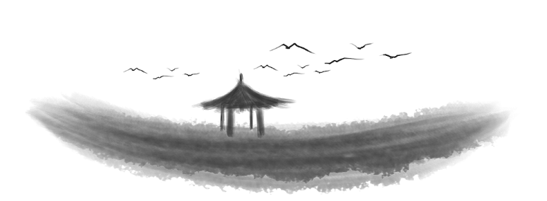

匣有剑否，转身皆是江湖
剑未佩妥，出门便已是江湖
初离学堂，踏入“江湖”，总归是要尝过千种心酸、万般无奈。在时间无情打磨之后，你总能得到一些东西。可人真的是“分三六九等”的，有的人初入职场，不多时，便游刃有余，升职加薪，不在话下，而有的人，勉强找个小工作，朝九晚六地干着，无论过多久，都是那个样子。这是为何？其实不难解释，同样是初入江湖，人家宝剑傍身，自信沉着，你赤手空拳，卑微怯懦，如何能比？

愿你有利剑藏匣
职场是残酷的江湖，当然，所谓祸福相依，这里同样是你发家致富，走上人生巅峰的试炼场，只希望你心中有谱，手中有剑，所过之处，披荆斩棘。
正文
咳咳，自从学了计算机，书读得相对以前少了许多，还是好好说人话算了，哈哈(^▽^)
博主目前是一个即将本科毕业的计算机专业小白，嘿嘿，真的，说起小白，我可是专业的哟~~，在这里想对和我一样即将毕业的同学，或是学弟学妹们说，当然，不打算从事计算机相关职业的出门左转(你要是开心，留下来也可以，哈哈哈)。无论你是打算考研，还是毕业直接进入职场，有几项技能都是你必须掌握的：操作系统、数据结构、算法(远不止这些，但这三个是我目前认为，相对来说最重要的三块，个人观点，欢迎来辩)。这里就不展开话题继续深聊了，有空再专门写两篇博客聊聊这三块怎么学吧。
联系博主
QQ：250057558
Email:18468126183@163.com
微信： 扫描下方二维码 <图片给你搞大点，扫起来就方便啦>